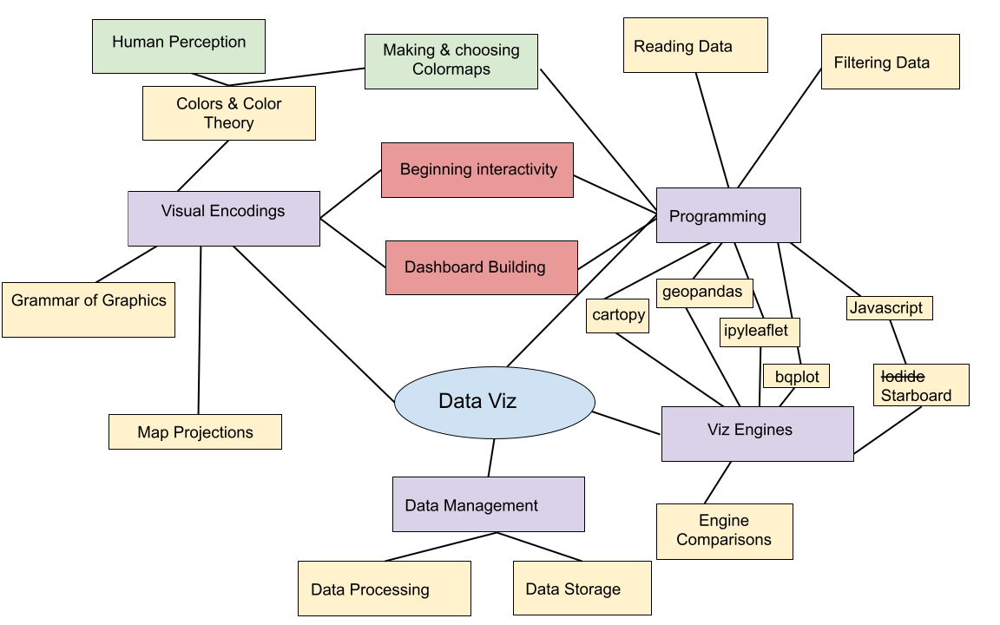
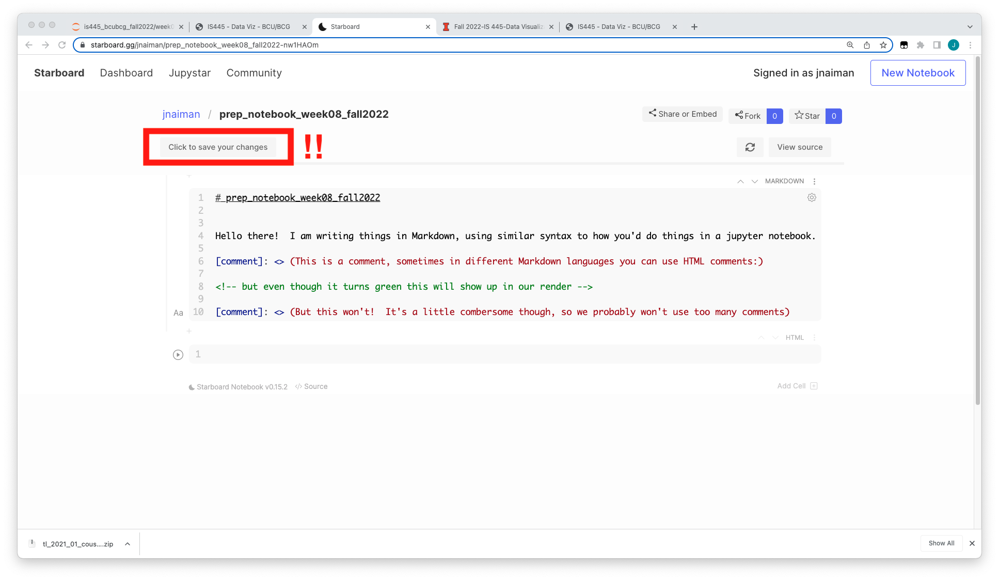

notes: also, the optional readings in the syllabus have been updated to reflect topics covered in weeks 11-13-ish
recordings aren’t 100% correct times, things are split over a few weeks
also, final project is posted – eventually you will sign up for groups again (for that and Homework 10) but we’ll get to that when we get closer to it!
notes: last week we discussed maps and mappable data

notes: this week we’ll finally start dipping our toes into Javascript with some seriousness
Luckily, will all of our usage of bqplot and grammar of graphics we are well equipt to do this!
in previous iterations of the class we used an online notebook host called Iodide to do this, but it is no longer supported so we are going to use a different one called Starboard
I’ve kept some of the links to old Iodide prep notebooks in the extended resources in case you are curious, but it will be very similar to stuff we will be doing using Starboard
notes: we’ve gone through a bunch of different sorts of viz, so its worth taking a moment to think about which kind to use in each instance
Don’t use a pie chart.
notes: pie charts force you to analyze things by area or angle, which are multidimensional attributes that are easy to confuse.
which is the most popular zoo animal in this pie chart? Elephants, otters, or lions?
Don’t use a pie chart.
notes: we can make a marginal improvement by labeling the values.
But we wouldn’t be doing visualization if we were interested in just reading text.
Don’t use a pie chart.
notes: And if 2-dimensional area is difficult to understand, then 3-dimensional volume is even worse.
3 dimensional values violate the principle of proportional ink, which states that:
The sizes of shaded areas in a visualization need to be proportional to the data values they represent.
notes: Some people will try to sell you on a modified version of a pie chart called a donut chart that has a hole in the middle. This is a slight improvement because it helps you see the values in the circle as 1-dimensional arc length instead of area.
But circles are still hard to decipher.
notes: We can reduce some of the confusion associated with using circles by creating proportional rectangular area. Now we can compare along the dimensions of height and width for certain values.
But area is still problematic because it asks us to compare two dimensions - width and height - simultaneously.
notes: you can show comparitive values more effectively with a bar chart though. These values are easily compared along just one dimension.
notes: there are really quite a few alternatives. There are many ways to show data stacking up progressively. This waterfall chart shows how each value is part of a whole, which was sort of the idea of the pie chart.
notes: to compare values from multiple sources, you could use collected columns
notes: Or to show they’re part of a whole, use a stacked column chart
I personally find these a bit hard to decifer, but other viz folks like them a lot – might be a personal choice type thing.
notes: or to show a time-series, use connected lines that stack on top of each other to show area across the whole canvass. This shows you trends and specific vertical values.
same issues with this here as far as stacking, but again, people like it!
JUST NOT THIS!
notes: Just do not compare pie charts!
Zomygod what is even happening right now.
notes: Sometimes we want to show data in a proportion and show connections. This often happens for hierarcical data.
Here in this example we want to show proportions of land based mammals that are popular at the zoo and then as we move out we subdivide by the individual animal species.
 |  |
notes: For heirarchical data, you can nest some of these other formats.
Thus far we have used bqplot as our primary declaritive method, but we’ll start looking at vega-lite this week
bqplot - both imperative & declaritive methodsvega-lite - declaritivevega-lite is a high-level method for describing visualizations independently of their data.
We will be exploring this using Starboard.
You can also use vega-lite directly with the online editor at:
https://vega.github.io/editor/
notes: First we’ll review a bit about what we’ve already done using bqplot
Then we’ll have a very hand-wavy intro to how javascript/web dev works
Today, we are introducing the second to last major tool we will use: vega-lite.
After this: Jekyll + Altair & Javascript dev within
Declarative:
Figure objects from Mark objects.Scale objects, display them using Mark objects that are keyed to a set of Scale objects, andipywidgets and traitlets.Lines to
represent.Scale objects describe relationships between visual attributes (position)
and data values.Axis objects are where data are placed.Figure objects contain marks and axes, as well as interaction.notes: a quick reminder about our grammar of graphics objects
Here is a reminder about that sort of basic setup:
import bqplot
import numpy as np
x = np.arange(100)
y = np.random.random(100) + 5
x_sc = bqplot.LinearScale()
y_sc = bqplot.LinearScale()
lines = bqplot.Lines(x = x, y = y, scales = {'x': x_sc, 'y': y_sc})
ax_x = bqplot.Axis(scale = x_sc, label = 'X value')
ax_y = bqplot.Axis(scale = y_sc, label = 'Y value', orientation = 'vertical')
fig = bqplot.Figure(marks = [lines], axes = [ax_x, ax_y])
display(fig)
With bqplot, we construct a set of objects that are related:
bqplot provides several scales we can utilize:
LogScaleLinearScaleDateScaleOrdinalScaleColorScalebqplot has several different marks we can explore. We have utilized a few:
HeatMapGridHeatMapBarsGraphAs noted in the previous class, bqplot widgets are all based on ipywidgets. This means we use the same systems for describing the two.
We add an interaction to a given figure via the interaction keyword argument
to a figure.
We have used several of these different interaction methods:
FastIntervalSelectorIndexSelectorBrushIntervalSelector & BrushSelectorMultiSelectorLassoSelectorHandDrawPanZoomTooltipnotes: this will be an EXTREMELY hand wavy overview
PPP just is a fancy way of saying a communcations protocol that supports transmision between two routers w/ or w/o any host - https://en.wikipedia.org/wiki/Point-to-Point_Protocol
bqplot callbacks!)notes: here “garbage collected” just means JS handles memory management - we don’t have to explicitly allocate and deallocate regions in memory for variables
the “garbage collector” is basically the part of JS that goes and figures out what memory to release
“single-threaded” means that code executes in order, except …
“asynchronous” means that some code gets handed off some code to the browser to be excecuted “in the background” - when the browser is finished, the tasks are “returned” – we essentially already did thsi with some of our “on_change” and “on_click” stuff with bqplot!
The Document Object Model (DOM) is how we interact with the collection of HTML objects in our document.
For instance, a page can be composed of <div> objects, <p> objects, etc,
and we can construct and interact with these. This includes things like
modifying style sheets.

(See, for example, the jsfiddle for jQuery boilerplate ).
notes:
for example, we can specify the layout of a document in HTML with different components like the header, title, and body
the body will have different elements like <div> and <a>, etc.
The Document Object Model (DOM) is how we interact with the collection of HTML objects in our document.
For instance, a page can be composed of <div> objects, <p> objects, etc,
and we can construct and interact with these. This includes things like
modifying style sheets.
One alternative is to have rendering tied to data and data
values, and to have those automatically update as needed – vega-lite.
In Python, we would fetch a website and wait for that to finish before we move on.
import requests
r = requests.get("https://google.com/")
print(r.text)
print("Request completed!")
In Javascript, we would tell the code to fetch, but we would also tell it what to do after it finished.
This uses jQuery, but you can do it without that.
$.get("https://google.com/", function(data, status){
alert("Data: " + data + "\nStatus: " + status);
});
console.log("Hey, I've done the thing.");
Note that you can’t always get this to work. In fact, that example won’t even work!
Async is how we can think about event driven programming, as well. We have
done this using traitlets and ipywidgets using callbacks in Python, and we will do it here
as well.
var button = $("button");
button.on("click", function() {
console.log("I've been clicked!");
});
We will go over a few things, and then move on to vega-lite.
You can declare variables in Javascript implicitly or explicitly, depending on how you want them scoped.
var myArray = [1, 2, 3, 4];
var myString = "Hello there!";
var myConcatString = "Hi " + "there " + 5;
var myObject = {'a': 1, 'b': 2, 'c': [1, 2, 3, 4]};
If you have an array of objects, there are three very handy functions you can
utilize: slice, forEach and filter. If you have an object, you can
update it either by accessing a property with a period (obj.something) or by
accessing it like you would a dictionary in python (obj['something']).
We will use this more next week, but here is the overview…
filtervar myArray = [1, 5, 1, 3, 50, 14, 2];
myArrayFiltered = myArray.filter(val => val > 2);
Note that here I’m using => as shorthand for declaring a function.
notes: we will use the filtering especially for data and plots next week!
forEachTo execute something on every value in an array, you can call forEach with a
function.
var myArray = [1, 2, 3, 4, 5];
myArray.forEach(val => console.log(val * 2));
sliceYou can set a start and a stop on an array with a slice call:
var myArray = ["Hello", "I", "am", "here", "now"];
myArray.slice(3).forEach(word => console.log(word));
https://vega.github.io/editor/
notes: we’ll start by making a quick plot in the vega-lite editor
open the vega-editor and spend some time with examples!!!
From the vega-lite examples, you can make a bar chart that is an aggregate like so:
{
"$schema": "https://vega.github.io/schema/vega-lite/v3.json",
"data": {"url": "data/movies.json"},
"mark": "bar",
"encoding": {
"x": {
"bin": true,
"field": "IMDB_Rating",
"type": "quantitative"
},
"y": {
"aggregate": "count",
"type": "quantitative"
}
}
}
Data available list is here.
notes: here, we just specify what version of vega-lite we are using
then specify where the data is (this is stored on the vega-lite github of this schema)
then say we are making a “mark” of a “barplot”
then say what we are
There are several mechanisms by which we describe data representations in
vega-lite, but the overarching principle is that it is declarative. We define
what it does based on what we say we want it to look like.
The place where this is no longer true is when we modify datum values.
The syntax you will need to be the most familiar with:
mark: how to visually represent somethingencoding: the translation between data and the markaggregate: operating over a collection of points – mean, sum, median,
min, max, count (next week)filtering: for plotting subsets of data (next week)type: quantitative, temporal, ordinal, or nominal
notes: DO
come back here for more after!!

notes: Starboard is a newer system and so there are some things that are a bit fiddly and we should be aware of.
One is that the “add cell” button is on the right and is a little hard to see.
Also, to add text, you have to click on the little button on the left to modify text or code blocks.

notes: You can the type of the cell into things like markdown/JS/Python, etc on the left dropdown as well

Autosave is NOT a feature of Starboard notebooks!
notes: one, potentially super annoying thing is that Starboard does not auto-save your work – make sure you click that save button frequently!!